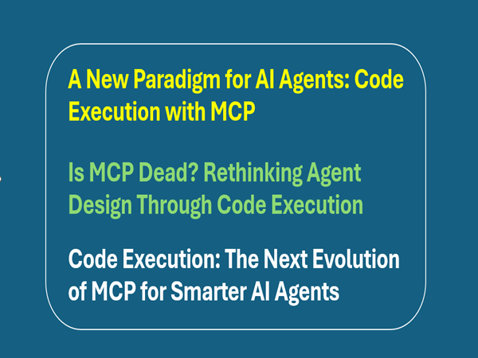

Code Execution with MCP:
A Leaner, Smarter Way to Build AI Agents

Table of Contents:
- Introduction
- What Is MCP (Definition, core concept, Adoption)?
- Introducing Code Execution with MCP?
- Why Code Execution with MCP Is an Improved Approach
- Breakdown the Core Concepts Code Execution with MCP
- Full Example Scenario
- Limitations & Considerations before application
- Conclusion
- Partnering with Tech-Insight-Group: Your RAG Implementation Ally
- Call to action
Stay in the loop, follow us on LinkedIn to catch fresh articles every week.
If you're looking to get started with Generative AI, Agentic AI workflows, or migrating your workloads to Microsoft Fabric, partnering with Tech-Insight-Group LLC is your strategic gateway to expert-led consulting and hands-on training services tailored for real-world impact.
Introduction:
This article was born out of a real-world challenge my team and I faced with a customer over the past two weeks. Despite our best efforts; including internal troubleshooting, leveraging Copilot, and consulting peers; we struggled to help the customer optimize costs and maintain strict data privacy within their MCP-based agent workflows. The turning point came when I discovered an insightful article published on Nov 04, 2025 from Anthropic that introduced a new paradigm: Code Execution with MCP.
It offered not just a technical solution, but a conceptual shift in how agents interact with tools; one that directly addressed the limitations we were up against. I’m sharing this here because I know others are likely facing similar constraints, and this approach could be the breakthrough they need. What follows is a practical, field-tested breakdown of how Code Execution with MCP works, why it matters, and how to apply it effectively.
What is MCP?
To begin, let’s define what MCP entails. The Model Context Protocol (MCP) is a pattern for structuring AI agents by injecting tools, memory, and system prompts into a shared context window. It’s been widely adopted across frameworks like LangChain, CrewAI, Semantic Kernel, Microsoft Autogen, and even Claude’s Skills.
MCP’s Business Impact:
Accelerating AI-Driven Process Automation Through Contextual Tooling
MCP enhances enterprise AI workflows by embedding tools directly into the model’s context, making them dynamically discoverable and immediately actionable. This contextual tooling empowers agents to operate with flexible, swappable components like tools, prompts, and memory without hardcoding logic, which accelerates iteration and reduces engineering overhead. Its support for multi-agent coordination allows shared context across agents, enabling collaborative reasoning and seamless handoffs in complex business processes like claims handling, customer support, or procurement workflows.
The Hidden Costs of MCP:
Why Token Overhead and Execution Obscurity Undermine Agent Scalability
While MCP offers structural clarity, its implementation introduces significant drawbacks for enterprise AI workflows. Injecting full tool specs and memory into every prompt consumes up to 60–70% of the model’s context window, limiting reasoning depth and inflating compute costs. Frameworks like LangChain further obscure execution flow, complicating debugging and slowing performance.
Below is an example illustrating how agents can become overwhelmed by excessive prompt injections and context stacking. As tool definitions, memory buffers, and message history accumulate in the context window, the agent’s reasoning becomes prone to misalignment, inefficiency, and increased risk of prompt injection. This architecture highlights the fragility of context-based orchestration when scaled across complex workflows.

More critically, placing tool definitions in context exposes agents to prompt injection risks, raising governance and security concerns. These limitations have led many AI engineers to reconsider MCP’s role in scalable agent design. As orchestration grows more opaque and expensive, the industry is shifting toward approaches that prioritize clarity, efficiency, and modular control.
Introducing:
Code Execution with MCP for Context Efficiency
As code execution environments become increasingly common for AI agents, a highly effective solution is to expose MCP (Model Context Protocol) servers as code APIs instead of direct tool calls.
What Is “Code Execution with MCP”?
Code Execution with MCP is a modern approach to building AI agents that interact with external tools and systems using the Model Context Protocol (MCP). Instead of relying on direct tool calls embedded in the model’s context window, agents write and execute code (e.g., TypeScript or Python) to interact with MCP servers.
Code Execution with MCP: Implementation Strategy
One practical method is to generate a file tree of all available tools from connected MCP servers, making them easily discoverable and callable. This approach streamlines orchestration, enhances modularity, and sets the stage for scalable, low-latency agent design.
Below is an example implementation using file tree: Each .ts file represents a callable tool exposed by an MCP server. The agent can:
- Dynamically discover available tools via directory introspection.
- Generate code to invoke specific functions (e.g., search_web("Taipei weather")).
- Chain tool outputs across folders (e.g., fetch → clean → summarize).
📁 mcp-tools/
├── 📁 data/
│ ├── 📄 fetch_csv.ts
│ ├── 📄 clean_dataframe.ts
│ └── 📄 summarize_table.ts
├── 📁 web/
│ ├── 📄 search_web.ts
│ ├── 📄 extract_links.ts
│ └── 📄 scrape_content.ts
├── 📁 finance/
│ ├── 📄 get_stock_price.ts
│ ├── 📄 convert_currency.ts
│ └── 📄 forecast_trends.ts
├── 📁 utils/
│ ├── 📄 log_event.ts
│ ├── 📄 format_date.ts
│ └── 📄 generate_uuid.ts
This means:
- Agents write code to call tools.
- Tool definitions are discovered and loaded on demand.
- Intermediate results are processed in code, not passed through the model
Now, let’s go over the three points above for a clearer understanding. At the end, I’ll also provide a full example scenario to reinforce the concepts.
Agents Write Code to Call Tools: The agent doesn’t need to load the full schema of getSheet into the model context. It simply writes code that calls the tool directly. This is more efficient and flexible.
Example: Instead of using declarative tool calls inside the model context, the agent writes executable TypeScript code:
import * as gdrive from './servers/google-drive';
import * as salesforce from './servers/salesforce';
const sheetData = await gdrive.getSheet({ sheetId: 'orders-2025' });
Tool Definitions Are Discovered and Loaded on Demand: Instead of loading every tool’s full schema (which could be thousands of tokens), the agent searches for tools by name or description. It only loads the full definition if needed. This keeps the context lean and fast.
Example: The agent uses a search_tools function to find the right tool:
const tools = await search_tools({ query: 'get sheet data', detailLevel: 'name-only' });
Intermediate Results Are Processed in Code, Not Passed Through the Model: The full sheet might contain 10,000 rows. Instead of passing all that into the model (which would explode the token count), the agent filters it in code and only returns the top 5 pending orders. The model sees just what it needs.
Example: After fetching the sheet, the agent filters the data before returning anything to the model:
const pendingOrders = sheetData.filter(row => row.Status === 'pending');
console.log(pendingOrders.slice(0, 5));
What It Means:
- Agents write code to call tools → Instead of declarative tool calls in the model context, agents generate executable code (e.g., TypeScript) to interact with tools.
- Tool definitions are discovered and loaded on demand → Agents use search_tools to find relevant tools without loading full schemas unless needed.
- Intermediate results are processed in code, not passed through the model- → Large datasets (e.g., spreadsheets, transcripts) are filtered, joined, or transformed in code before minimal output is returned to the model.
This design allows agents to write and execute code that interacts with MCP servers dynamically.
Why It’s an Improvement version of MCP
- Massive token savings (up to 98.7%): Agents process data in code instead of passing full tool schemas or large results into the model, drastically reducing token usage.
- Faster agent responses due to leaner context: With fewer tokens and no bloated context, agents respond quicker and scale better under load.
- Better privacy: sensitive data stays out of model context: Personally identifiable information (PII) like emails or phone numbers can be tokenized or filtered in code before reaching the model.
- Reusable skills: agents can save and reuse logic as modular functions: Common workflows (e.g., “save sheet as CSV”) can be stored as .ts files and reused across agents, improving maintainability.
- State persistence: agents can write to files and resume tasks later: Agents can store intermediate results or checkpoints in the filesystem, enabling long-running or resumable workflows.
- More powerful logic: loops, retries, and conditionals handled in code: Agents can use native control structures (e.g., while, if, try/catch) to manage complex flows without relying on model chaining.
- Dynamic tool discovery: agents explore tool directories like a filesystem: Instead of loading all tools upfront, agents search and load only what’s needed using search_tools, keeping context efficient and modular.
💡 Full above Example Scenario
Goal: Find pending orders in a Google Sheet and update Salesforce.
What’s happening:
- Tools are imported as code modules.
- Only relevant rows are selected in code.
- No need to pass full sheet or tool schemas into the model.
import * as gdrive from './servers/google-drive';
import * as salesforce from './servers/salesforce';
const allRows = await gdrive.getSheet({ sheetId: 'orders-2025' });
const pending = allRows.filter(row => row.Status === 'pending');
await salesforce.updateRecord({
objectType: 'Order',
recordId: pending[0].id,
data: { status: 'follow-up initiated' }
});
Limitations & Considerations of Code Execution with MCP
While this new approach offers significant efficiency and privacy gains, it also introduces operational and architectural considerations that teams must carefully manage.
- Infrastructure Overhead: Requires a secure execution environment with sandboxing, resource limits, and monitoring to safely run agent-generated code.
- Operational Complexity: Adds engineering effort to manage file systems, execution runtimes, and error handling compared to simpler direct tool calls.
- Model Awareness: Agents must be designed to navigate file structures and understand code interfaces, which may require additional scaffolding or training.
- Logging & Debugging: Since intermediate results stay in the execution layer, debugging workflows may require explicit logging or tracing mechanisms.
- Skill Management: Persisted skills (saved functions) need versioning and organization to avoid duplication or outdated logic.
- Tool Discovery Strategy: Progressive disclosure via search_tools or filesystem exploration must be well-structured to avoid missing relevant tools.
- Data Governance: Tokenization and privacy-preserving flows must be carefully implemented to ensure sensitive data is never exposed to the model.
Conclusion
Code Execution with MCP represents a transformative leap in how AI agents interact with tools; shifting from context-heavy, declarative calls to lightweight, executable logic that’s modular, secure, and efficient. By offloading computation and data handling to code, agents gain the ability to scale, preserve privacy, and execute complex workflows with precision.
This approach not only reduces token usage and latency but also unlocks new patterns like reusable skills, persistent state, and dynamic tool discovery. For developers and architects building next-generation agents, embracing this model is key to delivering faster, smarter, and more maintainable AI systems.
Call To Action
💡 Ready to Take the Next Step?
If you’re reading this to kick off your first AI, Data project, streamline your current workflow, or upskill your team for what’s next. Tech-Insight-Group LLC is here to help. We specialize in turning AI potential into practical impact through expert consulting and hands-on training. Visit our services page to explore how we can support your journey from strategy to execution. Let’s build something extraordinary together.
🙏 We welcome your feedback, let’s connect.
Thank you for reading Code Execution with MCP: A Leaner, Smarter Way to Build AI Agents. If you found this article helpful, feel free to like, share, or leave a comment; we’d love to hear your thoughts.
Kudos to our entire team for their dedication, and a special shoutout to Jean Joseph, our Principal Data & AI Architect, whose vision and technical leadership made this work possible.
Here is the original public announcement from Anthropic: Code execution with MCP: building more efficient AI agents \ Anthropic